一基因一酵素：基因做出蛋白質
- 4-2 的中心法則說：DNA → RNA → 蛋白質。這個想法是怎麼來的？先看「基因和蛋白質有關」的證據。
- 1909年，蓋羅：基因藉著產生酵素，催化細胞內特定的化學反應，而決定表現型。
- 1949年，畢德和特吞用紫外線照射紅麵包黴造成突變，研究基因和酵素的關係。
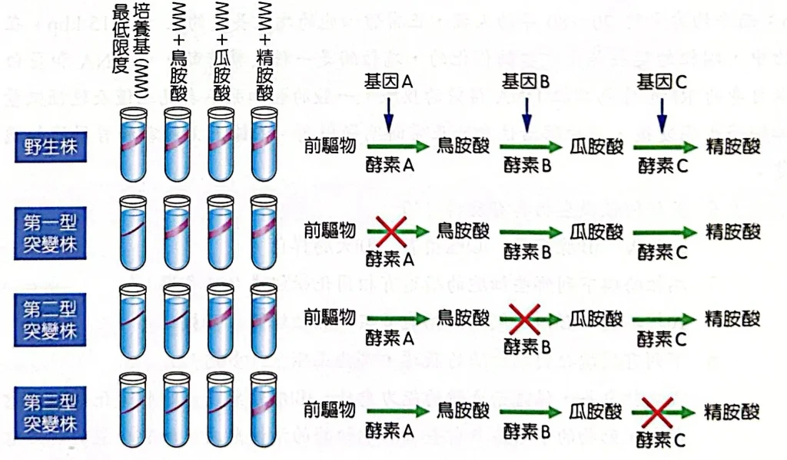
畢德與特吞的紅麵包黴：三型突變株各缺一種酵素，只要補上被擋住那一步「之後」的產物就能生長原講義PDF第12頁・印刷第120頁・點圖放大
- 每一型只壞一個基因、只缺一種酵素 → 結論：一個基因控制一種酵素的合成（一基因一酵素假說）。
- 後來修正為一基因一多肽：有些蛋白質由兩條以上的多肽組成（例如血紅素有4條），每條多肽各由一個基因決定。
- 再進一步：有些基因只轉錄成 RNA（如 tRNA、rRNA），不轉譯成多肽 → 基因＝一段具有功能的 DNA。
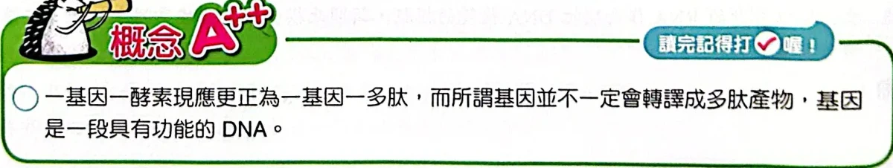
概念A++：一基因一酵素修正為一基因一多肽；基因是一段具有功能的 DNA原講義PDF第12頁・印刷第120頁・點圖放大
轉錄：DNA → RNA
- 轉錄：依照 DNA 的訊息合成 RNA。
- 一個基因的兩股中，只有一股被讀，叫模版股；另一股叫編碼股（序列和做出的 RNA 相同，只是 T 換成 U）。
- 不同基因可以用不同的那一股當模版。
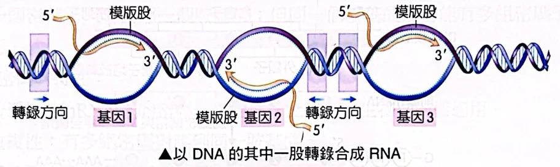
每個基因只以其中一股當模版轉錄；不同基因可以用不同的股原講義PDF第13頁・印刷第121頁・點圖放大
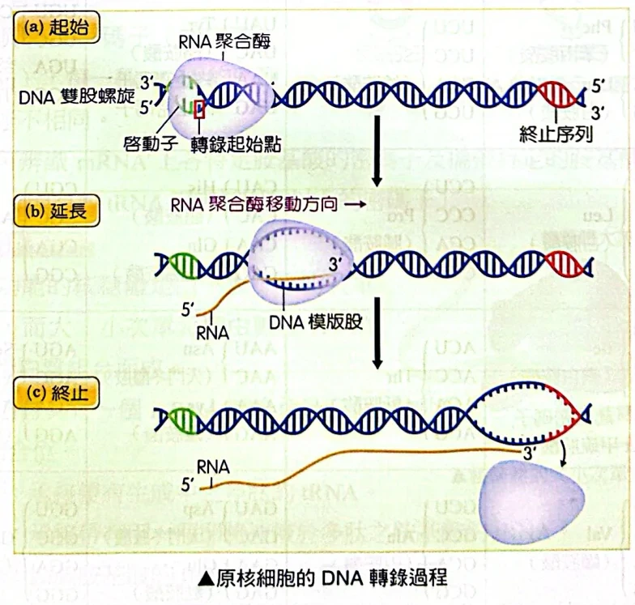
原核細胞的轉錄：(a)RNA 聚合酶結合啟動子 (b)沿模版延長 RNA (c)到終止序列後脫離原講義PDF第13頁・印刷第121頁・點圖放大
真核細胞的轉錄後修飾
- 真核細胞的 mRNA 剛轉錄好時叫前驅 mRNA，要在細胞核裡加工完，才離開細胞核。
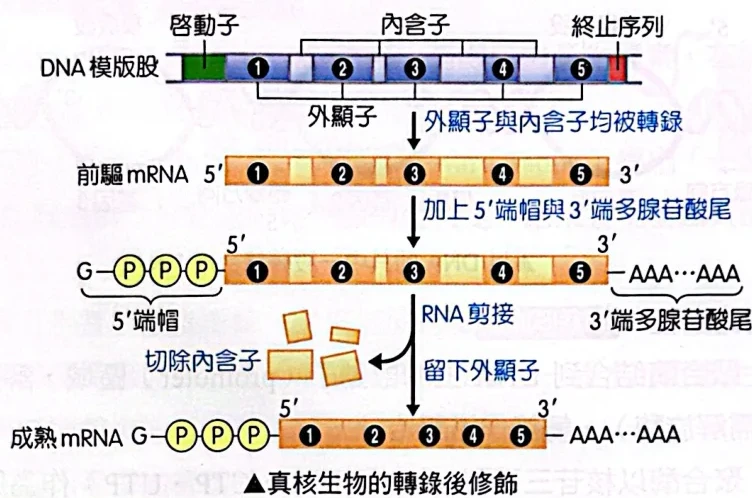
真核生物的轉錄後修飾：加 5′端帽、加 3′多腺苷酸尾、剪掉內含子、接起外顯子原講義PDF第14頁・印刷第122頁・點圖放大
- 真核的 mRNA 只有一個讓核糖體開始的位置 → 一條 mRNA 只做一種蛋白質。
- 但同一個前驅 mRNA 可以用不同方式剪接（選擇性剪接），保留不同的外顯子組合 → 一個基因可做出不同的蛋白質。
遺傳密碼：三個鹼基一個胺基酸
- 為什麼是 3 個：RNA 只有 4 種鹼基，胺基酸有 20 種。1 個鹼基只能分 4 種；2 個是 4×4＝16 種，不夠；3 個是 4×4×4＝64 種，夠用。
- mRNA 上每 3 個鹼基叫一個密碼子，64 個中有 61 個對應胺基酸，另 3 個是終止密碼子。
- 1966年，尼倫柏格和柯拉納在試管中人工合成多肽，把密碼全部解讀出來。
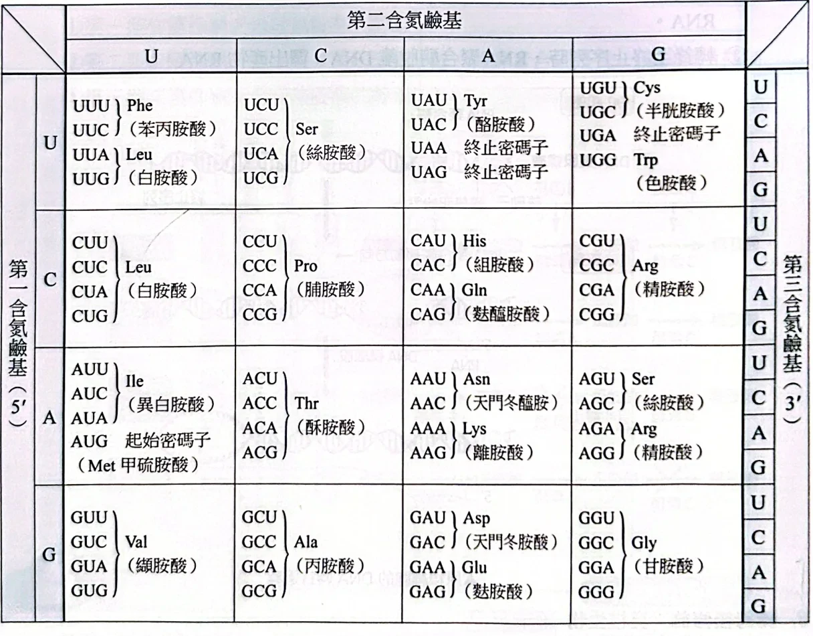
遺傳密碼表：依第一（5′）、第二、第三（3′）個鹼基查出胺基酸；AUG 起始，UAA、UAG、UGA 終止原講義PDF第14頁・印刷第122頁・點圖放大
轉譯的工具：tRNA 與核糖體
- 轉譯：依照 mRNA 的訊息合成多肽，在細胞質的核糖體進行。
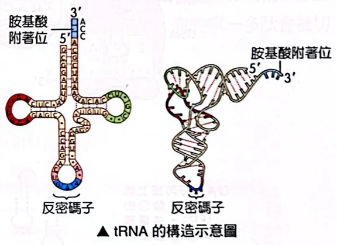
tRNA：3′端 CCA 接胺基酸；中間的環有反密碼子原講義PDF第15頁・印刷第123頁・點圖放大
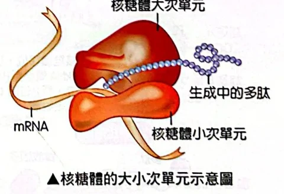
核糖體由大、小次單元組成，夾著 mRNA，生成中的多肽從大次單元伸出原講義PDF第15頁・印刷第123頁・點圖放大
- 核糖體由大、小次單元組成，各由數種 rRNA 和多種蛋白質構成；有 1 個 mRNA 結合位、3 個 tRNA 結合位（A、P、E）。
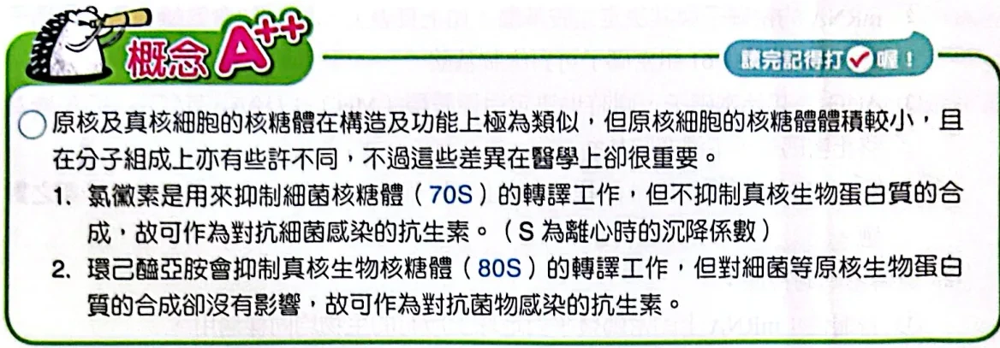
原核核糖體 70S、真核 80S：抗生素利用這個差異只抑制細菌（或只抑制真菌）原講義PDF第16頁・印刷第124頁・點圖放大
轉譯的過程與聚核糖體
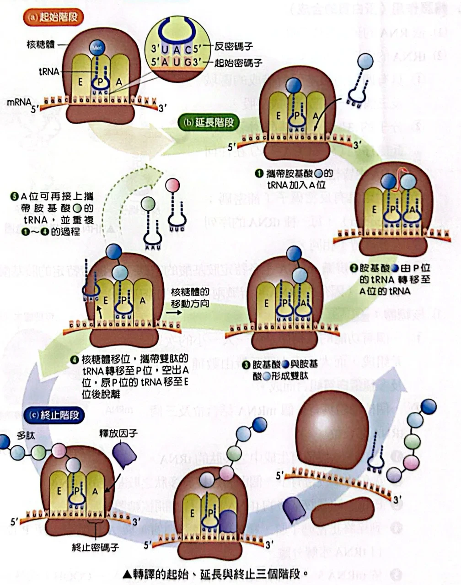
轉譯三階段：(a)起始：Met-tRNA 在 P 位對上 AUG (b)延長：①進 A 位 ②③接上胺基酸 ④核糖體移位 (c)終止：釋放因子進 A 位，多肽脫離原講義PDF第16頁・印刷第124頁・點圖放大
- 核糖體沿 mRNA 5′→3′ 方向讀；多肽從胺基端（NH₂）開始，到羧基端（COOH）結束。
- 聚核糖體：需要大量蛋白質時，一條 mRNA 上同時有好幾個核糖體在轉譯。愈早開始的核糖體走得愈遠（愈靠近 3′ 端），身上的多肽愈長。
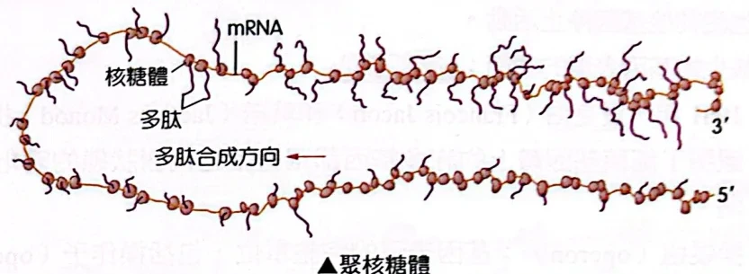
聚核糖體：一條 mRNA 上同時有許多核糖體在轉譯，愈靠近 3′端的多肽愈長原講義PDF第17頁・印刷第125頁・點圖放大
轉譯後修飾與原核 mRNA
- 剛做好的多肽還不一定有功能，常要經過轉譯後修飾：
- 接上醣類、脂質、磷酸基、金屬離子等。
- 切掉胺基端的一個或數個胺基酸（例如開頭的 Met）。
- 把一條多肽切成兩段或更多段。
- 例：胰島素先做成一條多肽，酵素切掉訊息序列和中間片段，留下用雙硫鍵相連的兩段多肽，才有功能。
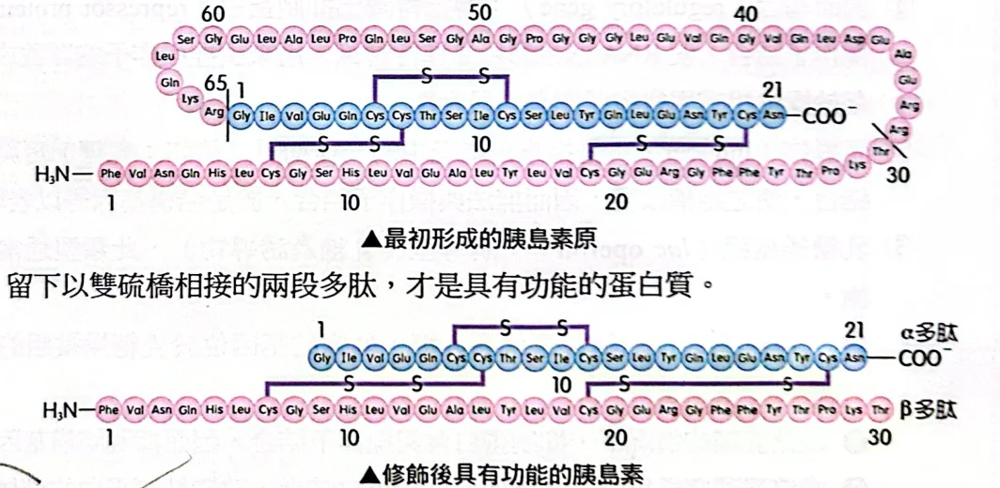
胰島素：先做成一條胰島素原，切掉中間片段後，留下以雙硫鍵相連的 α（21個）與 β（30個）兩條多肽原講義PDF第17頁・印刷第125頁・點圖放大
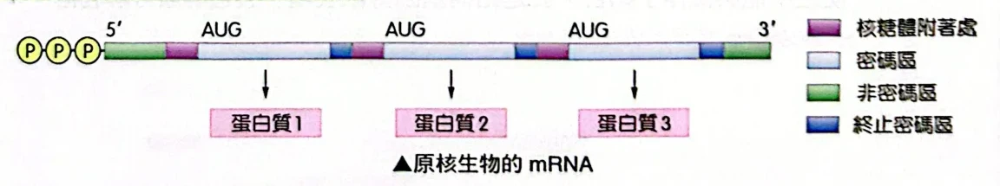
原核生物的一條 mRNA 有多個起始點，可做出好幾種蛋白質原講義PDF第17頁・印刷第125頁・點圖放大
原核基因的調節：操縱組
- 細胞不會讓所有基因一直表現：為了節省能量（經濟原則）或細胞分化，會選擇性地打開某些基因、關閉其他基因。
- 1961年，賈克伯和莫諾用大腸桿菌提出乳糖操縱組：細菌的基因會跟著環境（有沒有乳糖）開或關。
- 操縱組＝啟動子＋操作子＋結構基因（不含調節基因）。
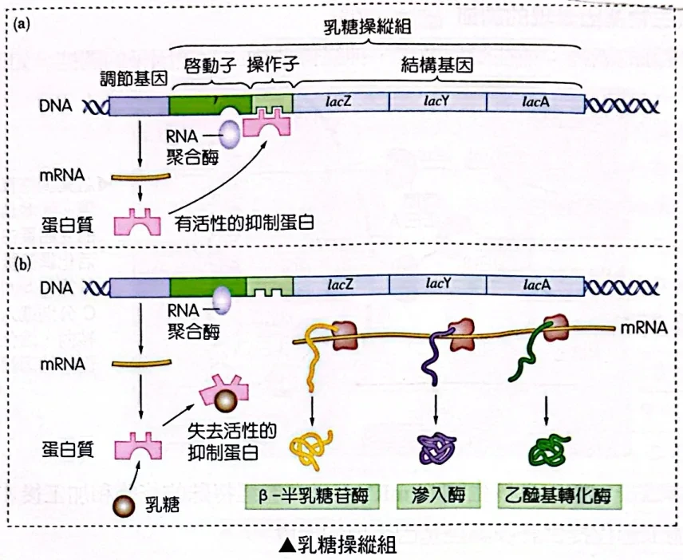
乳糖操縱組：(a)沒乳糖：抑制蛋白卡在操作子 → 不轉錄 (b)有乳糖：乳糖使抑制蛋白失去活性 → 做出三種酶原講義PDF第19頁・印刷第127頁・點圖放大
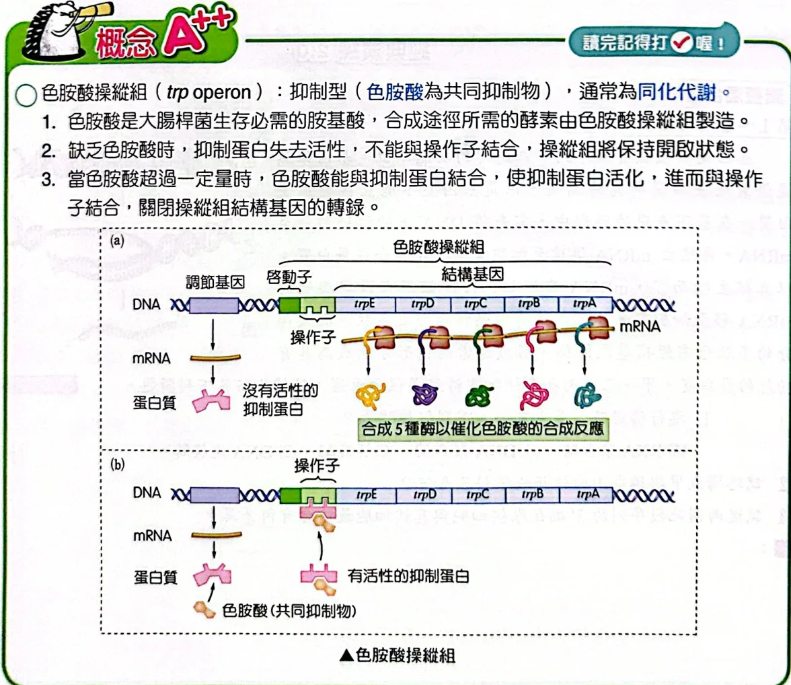
色胺酸操縱組：(a)缺色胺酸：抑制蛋白沒活性 → 做出合成色胺酸的5種酶 (b)色胺酸多：色胺酸使抑制蛋白活化 → 關閉原講義PDF第19頁・印刷第127頁・點圖放大
真核基因的調節
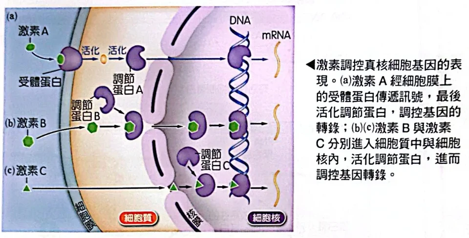
真核細胞的轉錄調控：激素經受體或進入細胞，活化調節蛋白，再調控基因轉錄原講義PDF第20頁・印刷第128頁・點圖放大
經典演練：轉錄題組 1–3
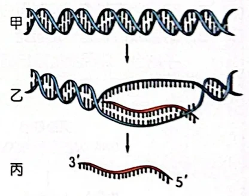
演練1–3附圖：甲（DNA）→ 乙（轉錄中）→ 丙（RNA，左3′右5′）原講義PDF第20頁・印刷第128頁・點圖放大
進行轉錄時，至少需加入下列何種酵素？
(A) RNA 聚合酶 (B) DNA 聚合酶 (C) 解旋酶 (D) DNA 連接酶
看答案與詳解收起
答A。
解- 轉錄的產物是 RNA → 要用 RNA 聚合酶把核糖核苷酸接起來。
- RNA 聚合酶結合啟動子後會自己解開那一小段雙股，所以不必另加解旋酶 (C)。
- (B) DNA 聚合酶做的是 DNA（複製用）；(D) DNA 連接酶接 DNA 片段（岡崎片段）→ 都是複製的酵素，轉錄不需要。
小結轉錄只靠 RNA 聚合酶：自己解旋、不用引子。
看答案與詳解收起
答甲（DNA）：去氧核糖核苷酸（以 dATP、dGTP、dCTP、dTTP 形式提供）；丙（RNA）：核糖核苷酸（以 ATP、GTP、CTP、UTP 形式提供）。
解- 看圖：甲是雙股螺旋 → DNA；丙是轉錄出來的單股 → RNA（mRNA 前驅物）。
- DNA 的單體：去氧核糖＋磷酸＋A、T、G、C。
- RNA 的單體：核糖＋磷酸＋A、U、G、C。
- 合成時加入的原料是「三磷酸」的形式，接上時放出焦磷酸、提供能量。
小結DNA→去氧核糖核苷酸（有T）；RNA→核糖核苷酸（有U）。
試述丙圖此段序列的 3′ 端在原核細胞與真核細胞最終會有何差異？
看答案與詳解收起
答真核細胞的 mRNA 在 3′ 端會加上一段多腺苷酸尾（poly-A 尾）；原核細胞的 mRNA 不加。
解- 真核細胞轉錄出的前驅 mRNA 要在細胞核內加工：5′ 端加帽、3′ 端加多腺苷酸尾、剪掉內含子，才送到細胞質。
- 原核細胞沒有核膜，mRNA 一邊轉錄就一邊被轉譯，不經這些加工 → 3′ 端沒有 poly-A 尾。
- 題目只問 3′ 端，所以回答 poly-A 尾即可（5′端帽是 5′ 端的差異）。
小結真核加工三件事：5′帽、3′poly-A 尾、剪接；原核都沒有。
經典演練：操縱組題組 4–8
若以白色長方形表示啟動子，以深色長方形表示結構基因，兩者在基因體上的相對位置何者正確？
看答案與詳解收起
答A。
解- 啟動子是 RNA 聚合酶附著、開始轉錄的地方，所以要在結構基因之前。
- RNA 聚合酶沿模版讀、合成 5′→3′ 的 RNA；以編碼股（和 mRNA 同方向）的 5′→3′ 來畫，「之前」就是 5′ 那一側。
- (A)：5′─[啟動子][結構基因]─3′ ✓。(B) 啟動子在後面；(C)(D) 啟動子插在結構基因中間 → 都不對。
有關 mRNA 丙、丁及戊，下列何者正確？
(A) mRNA 丙可轉譯出乳糖操縱組的抑制蛋白 (B) mRNA 丙可轉譯出乳糖操縱組的結構蛋白 (C) mRNA 丁可轉譯出乳糖操縱組的結構蛋白 (D) mRNA 戊可轉譯出色胺酸操縱組的抑制蛋白
看答案與詳解收起
答B。
解- mRNA 丙：乳糖高時上升、低時受抑制 → 跟著乳糖開關，正是乳糖操縱組結構基因（分解乳糖的酶）的 mRNA → (B) 對、(A) 錯。
- 抑制蛋白由調節基因製造，不受乳糖影響、一直少量表現 → 應該像 mRNA 丁「都無變化」。(C) 說丁做的是結構蛋白 ✗（結構蛋白會隨乳糖變化）。
- mRNA 戊：色胺酸低時上升、高時被抑制 → 色胺酸操縱組的結構基因（合成色胺酸的酶），不是抑制蛋白 → (D) ✗。
小結會跟著環境開關的是結構基因的 mRNA；調節基因（抑制蛋白）一直穩定表現。
基因表現的調控可發生在轉錄、轉譯與轉譯後等階段。推測操縱組主要是調節哪一個階段？
看答案與詳解收起
答轉錄階段。
解- 抑制蛋白結合在 DNA 的操作子上，擋住 RNA 聚合酶 → mRNA 做不出來。
- 表中 mRNA 丙、戊的「量」隨環境升降，也說明控制點在 mRNA 生成（轉錄）。
乳糖操縱組的抑制蛋白應為蛋白質 A 或蛋白質 B？當環境僅含乳糖而無葡萄糖時，該抑制蛋白是否具有活性？
看答案與詳解收起
答蛋白質 A；此時抑制蛋白不具活性（被乳糖結合而失去活性）。
解- 蛋白質 A 只對乳糖有反應：乳糖低時結合 DNA 甲區（卡住操作子），乳糖高時脫離 → 與 mRNA 丙「低時受抑制、高時上升」同步 → A 是乳糖操縱組的抑制蛋白，甲區是操作子。
- 蛋白質 B 只對色胺酸有反應 → 色胺酸操縱組的抑制蛋白（色胺酸高時結合乙區）。
- 環境有乳糖：乳糖（誘導物）與抑制蛋白結合、使它變形 → 失去活性，不能結合操作子 → 結構基因轉錄。
小結乳糖操縱組：有乳糖 → 抑制蛋白失活 → 開。
突變可以改變大腸桿菌乳糖操縱組的功能，若調節基因發生突變，使抑制蛋白無法與乳糖結合，試推測在乳糖存在或不存在時，對操縱組的功能影響是否會有不同的結果？
看答案與詳解收起
答不會有不同：無論有沒有乳糖，抑制蛋白都一直結合在操作子上，結構基因都不能表現（操縱組一直關閉）。
解- 這個突變只讓抑制蛋白「認不得乳糖」，它結合操作子的能力仍在。
- 沒有乳糖：抑制蛋白本來就卡在操作子上 → 關閉（和正常一樣）。
- 有乳糖：正常情況下乳糖會讓抑制蛋白脫離；現在乳糖接不上去 → 抑制蛋白仍卡著 → 還是關閉。
- 所以兩種情況結果相同：大腸桿菌無法製造分解乳糖的酶、無法利用乳糖。
經典演練：轉錄與轉譯題組 9–12
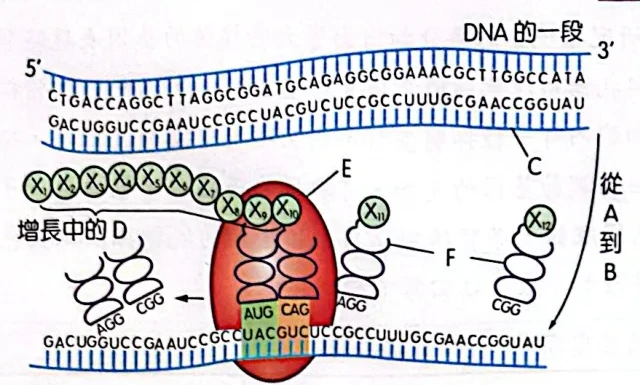
演練9–12附圖：上方 DNA 與轉錄出的 RNA（C），下方核糖體（E）、tRNA（F）與增長中的多肽 D；箭頭為核糖體轉譯方向原講義PDF第22頁・印刷第130頁・點圖放大
下列哪個構造的成分不含元素 P？
(A) C (B) D (C) E (D) F
看答案與詳解收起
答B。
解- 核酸的每個核苷酸都有磷酸 → 含 P。
- C＝RNA（含 P）；E＝核糖體＝rRNA＋蛋白質（rRNA 含 P）；F＝tRNA（含 P）。
- D＝增長中的多肽，由胺基酸組成（C、H、O、N，有的含 S），不含 P。
看答案與詳解收起
答從細胞核（經核孔）到細胞質。
解- 真核生物的轉錄在細胞核內（DNA 在核中）。
- 轉譯在細胞質的核糖體進行。
- 所以 RNA 由上方（轉錄處）移到下方（轉譯處），就是從細胞核經核孔出到細胞質。
小結真核：核內轉錄、核外轉譯，中間 mRNA 要出核。
看答案與詳解收起
答依圖中 tRNA 的排列回推，X4 對應圖上由左數第2組三個鹼基「UGG」；但這段 mRNA 左邊其實是 3′ 端，依 5′→3′ 的正確寫法是 5′-GGU-3′（見第12題的圖錯）。
解- 找對照點：核糖體裡兩個 tRNA 的反密碼子 AUG、CAG，分別配對圖中 mRNA 的「UAC」「GUC」（第19–24個鹼基），上面帶的是 X9、X10。
- 左邊離開的空 tRNA 是 AGG、CGG，配對「UCC」「GCC」；右邊進來的 AGG（X11）、CGG（X12）配對「UCC」「GCC」→ 圖是把 mRNA 由左往右、每3個一組讀。
- 由左到右分組：GAC │ UGG │ UCC │ GAA │ UCC │ GCC │ UAC │ GUC …，對應 X3、X4、X5、X6、X7、X8、X9、X10。
- 所以 X4 對應的是圖上寫成「UGG」的那三個鹼基。
- 但第一步讀圖已證明這段 RNA 左邊是 3′：圖上的「UGG」其實是 3′-UGG-5′，標準寫法（5′→3′）是 5′-GGU-3′。原頁沒有附答案；依原圖的出題意圖答「UGG」，寫答案時最好標出方向。
小結密碼子一律以 5′→3′ 寫；先確認 mRNA 哪端是 5′ 再分組。
看答案與詳解收起
答① 轉譯方向錯：RNA 和 DNA 上股互補，左端是 3′，但圖中 tRNA 從右邊進、左邊出，多肽 X1→X10 由左往右接，等於核糖體沿 mRNA 3′→5′ 讀（也和題目的向左箭頭矛盾）；轉譯應沿 5′→3′。② 這是真核細胞，送到細胞質轉譯的 mRNA 應該已經加工（5′端帽、3′多腺苷酸尾、剪掉內含子），圖中卻和剛轉錄的 RNA 完全一樣。
解- 錯誤①（方向）：轉錄出的 RNA 必與模版反向平行 → 圖中 RNA 左 3′、右 5′。核糖體應由 5′ 往 3′ 走，也就是往左（題目的箭頭方向）；往左走時新的 tRNA 應從左邊進入。但圖中帶 X11、X12 的 tRNA 從右邊來，空 tRNA 往左離開，最新的 X10 在右側 → 圖的實際讀法是由右往左的反方向（3′→5′），自相矛盾。
- 錯誤②（真核加工）：題目說是真核細胞；前驅 mRNA 要加帽、加尾、剪接後才出核，所以細胞質中的 mRNA 不會和剛轉錄的序列一模一樣，也該有 5′ 帽與 poly-A 尾。
- 其他也可以指出的不合理處：轉錄中 RNA 只會和 DNA 短暫配對一小段（約 8 個鹼基對），圖 C 卻整段都和 DNA 黏在一起。
原頁沒有附答案，以上為依正文判斷的合理答案。
小結讀圖先標 5′、3′：互補必反向；轉譯沿 mRNA 5′→3′。真核 mRNA 要加工才出核。
本篇整理
下一篇：如果 DNA 或染色體出錯（突變），蛋白質和性狀會怎樣？
核對原講義全頁（生物2 PDF12–22）
本節對應印刷120–130頁：PDF12–20上半是概念3 基因與蛋白質的合成、表現，PDF20下半–22上半是經典演練2.0素養混合題1–12（題組1–3學術探究；題組4–8實驗探究、學術探究；題組9–12學術探究，107全國模考修訂）。PDF22下半起是下一篇4-4。原頁沒有附答案，本頁答案依題幹與正文逐題推導；第11、12題的原圖本身有方向矛盾，詳解中說明。
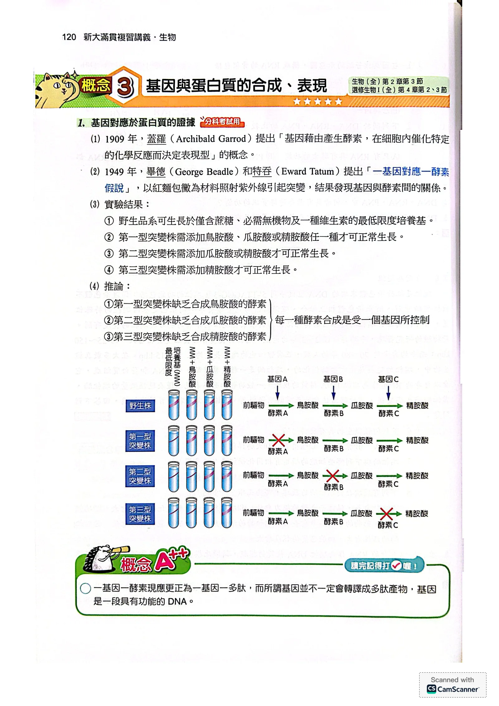
PDF第12頁／印刷第120頁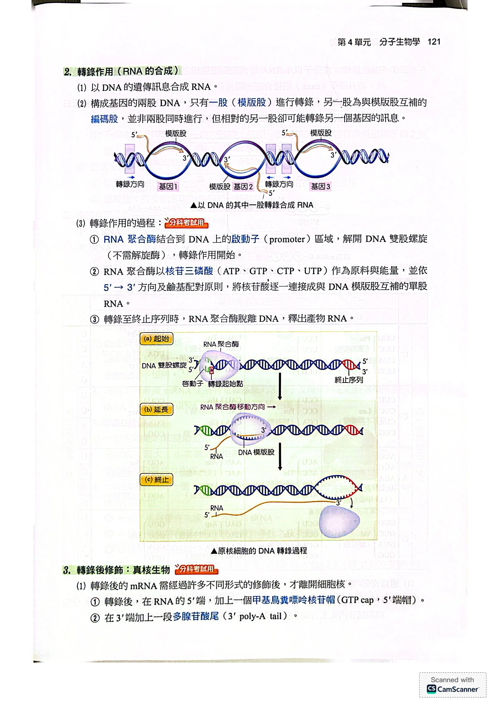
PDF第13頁／印刷第121頁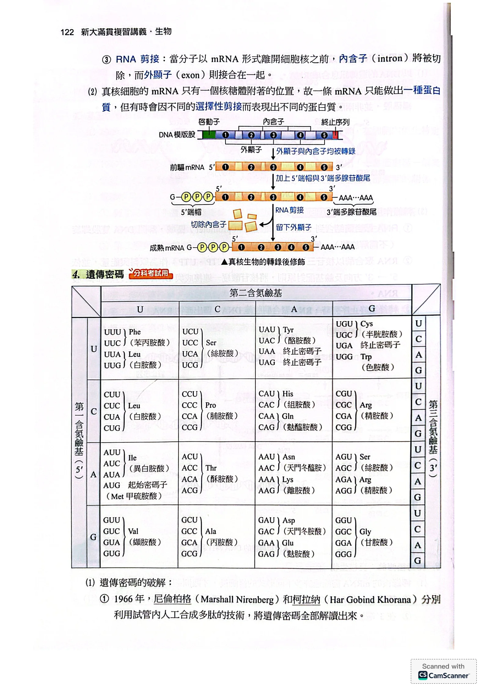
PDF第14頁／印刷第122頁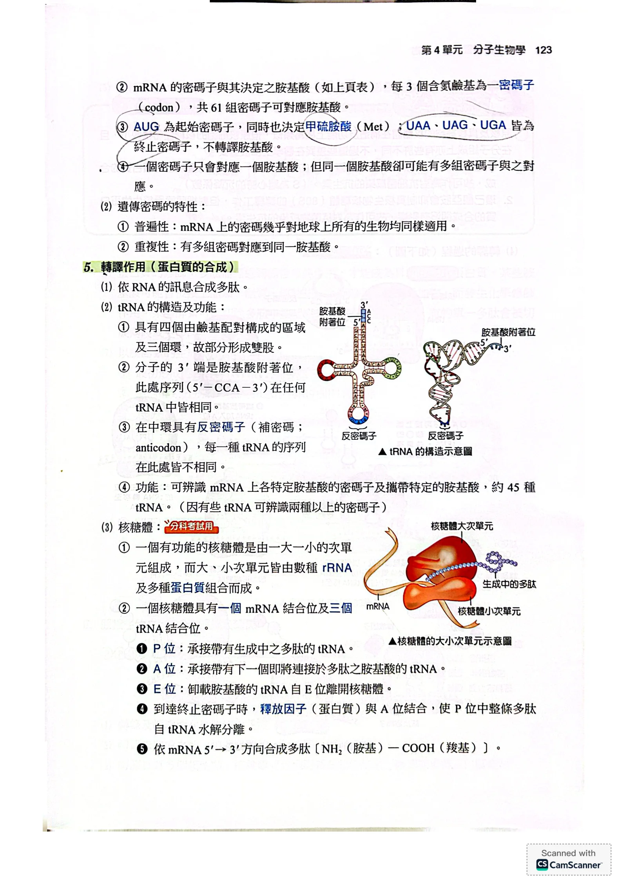
PDF第15頁／印刷第123頁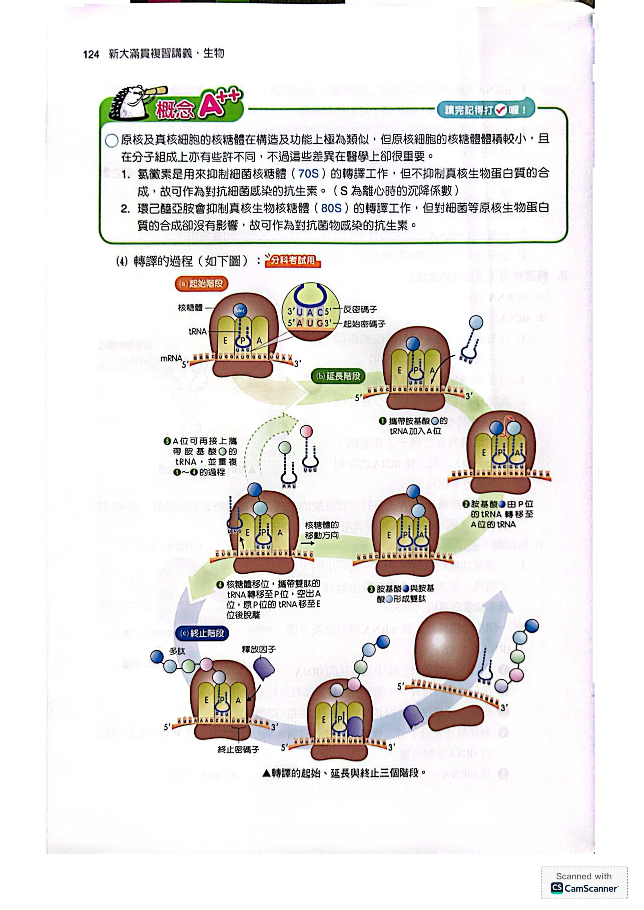
PDF第16頁／印刷第124頁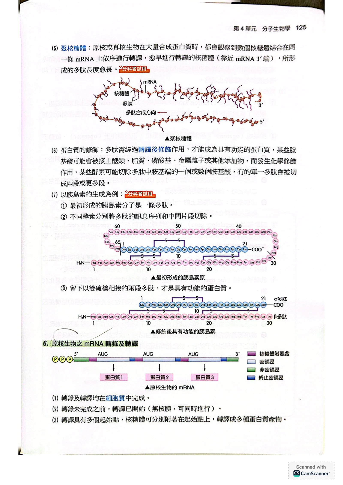
PDF第17頁／印刷第125頁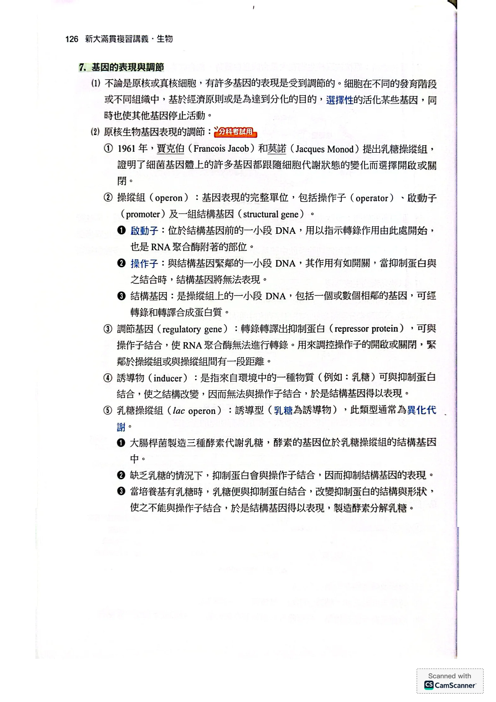
PDF第18頁／印刷第126頁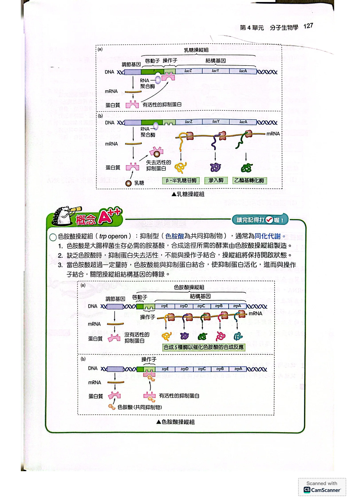
PDF第19頁／印刷第127頁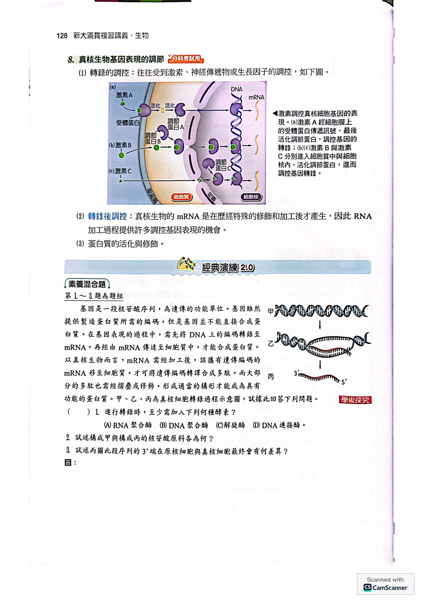
PDF第20頁／印刷第128頁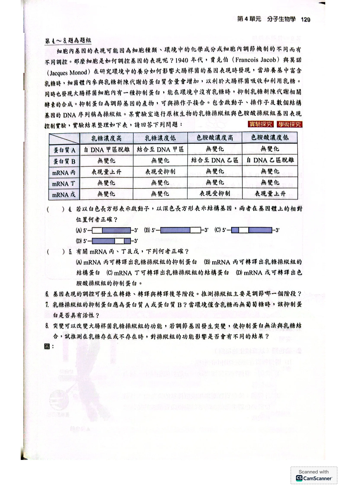
PDF第21頁／印刷第129頁 PDF第22頁／印刷第130頁
PDF第22頁／印刷第130頁